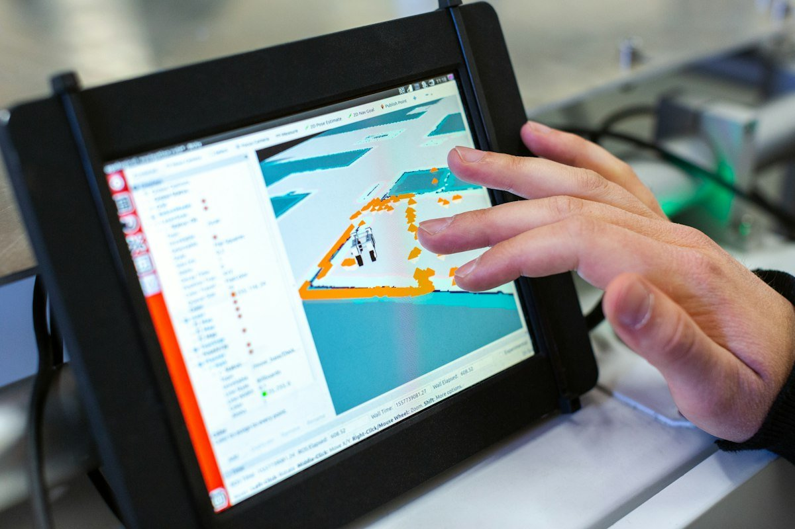

Certified Metal Fabrication
Heavy Structural Fabrication & Welding
Precision welding, plate processing, and complete mechanical assemblies built to AS/NZS standards.
Welding Bay Excellence
Built for Severe Industrial Operating Environments
Our welding and fabrication bays at 16 Church Road handle both bespoke one-off prototypes and recurring production assemblies for Western Australia’s resource and infrastructure projects:
- AS/NZS 1554 Certified Welders: Qualified in GMAW (MIG), GTAW (TIG), MMAW, and FCAW processes.
- Post-Weld Machining Integration: Welded sub-assemblies are stress-relieved and transferred directly to our horizontal borers and VMCs for precise final bearing bore alignment.
- Heavy Plate & Pipe Fabrication: Bisalloy wear liners, chute fabrications, skid frames, and high-pressure manifolds.


Complete Turnkey Delivery
In-House Finishing & Surface Treatments
Avoid managing multiple subcontractors. Inventec WA provides comprehensive surface preparation and finishing under a single purchase order:
From industrial abrasive sandblasting and industrial powder coating to chemical cleaning, hard chrome plating, metal spraying, vacuum hardening, and induction case hardening.
Request Fabrication Quote